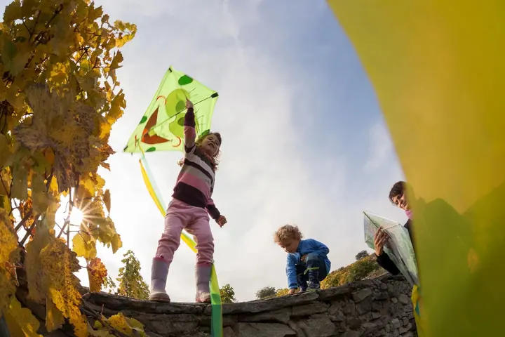
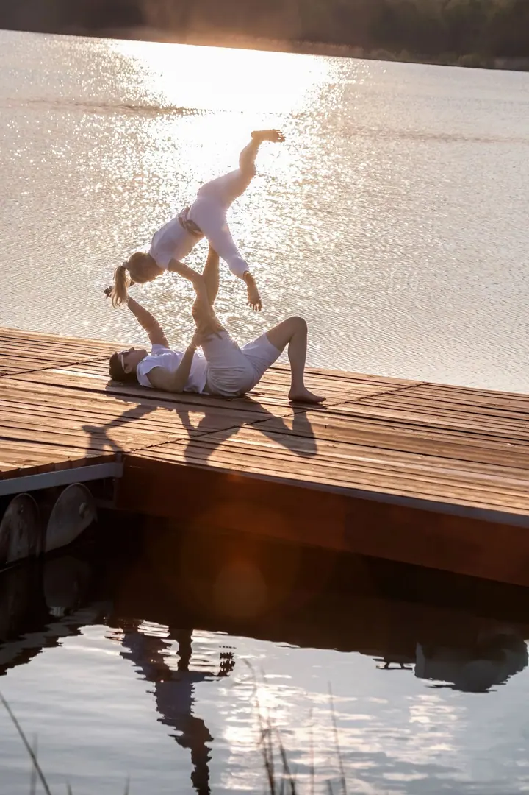

Jmenuji se Tomáš Marek a fotím interiéry , architekturu

i rodiny venku v přírodě

. Ať jde o hotel, restauraci, nebo vaše děti v podzimním listí, vždycky hledám to správné světlo a atmosféru místa.
(02) Co fotím
Focení, které má příběh
01
01 / 04
Interiéry, exteriéry a reality
Fotím hotely, restaurace, kanceláře i soukromé nemovitosti tak, aby působily přirozeně, čistě a reprezentativně. Pracuji se světlem, kompozicí a detailem a exteriéry fotím v ideální denní dobu.
Pomáhám značkám vizuálně komunikovat jejich hodnotu. Fotím produkty, služby i firemní prostředí tak, aby zaujaly, prodávaly a posilovaly identitu značky.
Kliknutím fotku zvětšíte · fotografie jsou ilustrační
(04) Postup
Jak to probíhá
Od první zprávy po hotovou galerii.
1
Krok 1 z 4
Pochopení cíle
Probereme, co a proč potřebujete nafotit a kde budou fotky použité. Podle toho volím přístup i výsledný styl.
2
Krok 2 z 4
Příprava a plánování
Naplánuji termín podle světla, denní doby a počasí. U interiérů domluvíme, jak prostor připravit.
3
Krok 3 z 4
Focení
Fotím s profesionální technikou a s důrazem na kompozici, světlo a detail. U rodin a párů nechávám prostor pro hru a pohyb.
4
Krok 4 z 4
Postprodukce
Každou fotografii pečlivě upravím tak, aby odpovídala současným vizuálním standardům, a pošlu vám hotový výběr.
Každý prostor má své světlo.
(05) Za objektivem
Ahoj, jsem Tomáš
Fotografii se věnuji profesionálně přes dvacet let. Za tu dobu jsem realizoval desítky projektů pro firmy, architekty, realitní kanceláře i individuální klienty. Nejvíc mě baví interiéry a architektura, kde rozhoduje práce se světlem, kompozice a detail.
Vedle zakázek fotím umělecké a cestovatelské snímky evropských měst a krajin, od Prahy přes Benátky až po norské fjordy. Moje fotky vyšly v časopisech jako National Geographic, BBC magazine nebo Lonely Planet, na známkách, v knihách i na fototapetách.
Každý projekt je pro mě jedinečný. Nejdřív chci pochopit, k čemu fotografie budou sloužit, pak focení pečlivě naplánuji a na konci každý snímek pečlivě upravím. Rád navážu dlouhodobou spolupráci, ale stejně rád nafotím i jednorázový projekt.
01Fotím přes 20 let
02Publikoval jsem v National Geographic
03Fotím evropská města a krajiny
04Mé fotky jsou i na známkách
05Fotím akrojógu
Tomáš
Tomáš Marek · Fotograf interiérů, architektury a rodin
Napište mi o svém projektu✳Tomáš Marek✳Napište mi o svém projektu✳Tomáš Marek✳Napište mi o svém projektu✳Tomáš Marek✳Napište mi o svém projektu✳Tomáš Marek✳
Pro koho fotíte interiéry a exteriéry?
Pro hotely, restaurace, kanceláře, realitní kanceláře, architekty i majitele soukromých nemovitostí.
Kdy je nejlepší fotit exteriér budovy?
Záleží na orientaci budovy a na tom, jakou atmosféru chcete. Termín proto plánuji podle ideální denní doby a počasí.
Upravujete fotografie?
Ano, profesionální postprodukce je samozřejmou součástí každé zakázky.
Je možná dlouhodobá spolupráce?
Určitě. Rád navážu dlouhodobou spolupráci a stejně rád nafotím i jednorázový projekt.
(07) Kontakt
Napište mi o svém projektu
Napište pár vět o tom, co si představujete, a termín, který se vám hodí.